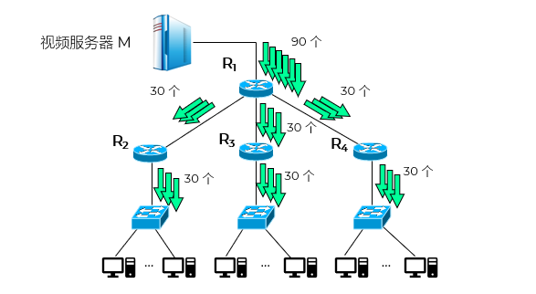
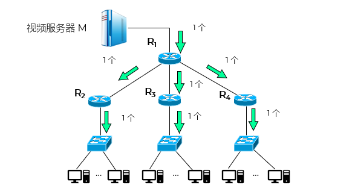
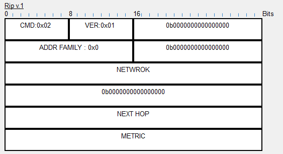
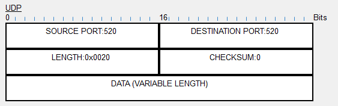
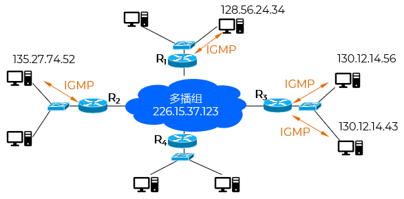
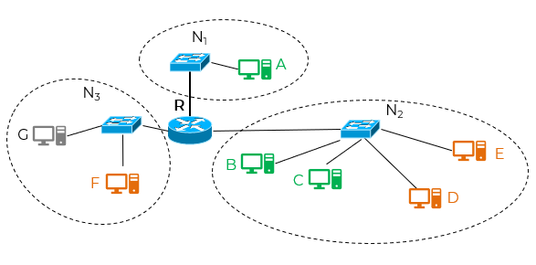
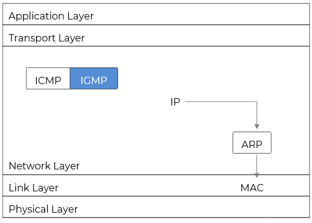

- 多播 Multicast
- 1988 年，Steve Deering 首次提出 IP 多播的概念
- 多播 (multicast)：以前曾译为组播
- 目的：更好地支持一对多通信；减轻网络中各种资源的消耗
- 一对多通信：一个源点发送到许多个终点

单播

多播
广播 vs 多播
| 广播 Broadcast |
发送方将数据包发送到同一网络内所有主机，无论这些主机是否需要该数据
全1地址
|
| 多播 Multicast |
发送方将数据包发送给一组特定的接收者，只有加入该组的主机才会接收数据
特定地址
|
- IP 多播 IP Multicast
- 在互联网上进行多播就叫做 IP 多播
- 互联网范围的多播要靠路由器来实现
- 能够运行多播协议的路由器称为多播路由器 multicast router
- 多播路由器也可以转发普通的单播 IP 数据报
- 从 1992 年起，在互联网上开始试验虚拟的多播主干网 MBONE (Multicast Backbone On the InterNEt)
- 相关标准
IGMPv1：1989 年公布；RFC 1112；组播路由器 ←→ 主机
IGMPv2：1997 年公布；RFC 2236；对 IGMPv1 进行了更新
IGMPv3：2002 年 10 月公布；RFC 3376
- 多播 IP 地址
- 使用 D 类地址 - 标识位 1110xxxx xxxxxxxx xxxxxxxx xxxxxxxx
- 每一个 D 类地址标志一个多播组
- 地址范围：224.0.0.0 ~ 239.255.255.255
- 多播地址只能用于目的地址，不能用于源地址
- 多播 MAC 地址
- 无法使用MAC地址
- 通过多播IP地址进行映射
高25位固定为：00000001 00000000 01011110 0
低23位取多播IP地址的后23位
[] 多播地址 224.1.1.1对应的多播MAC地址
- 多播IP的后23位：x0000001 00000001 00000001
- 高25位：01-00-5E-01-01-01
[] 多播业务 - RIP


多播业务
- 组播管理 IGMP
- IGMP - Internet Group Management Protocol
- 多播路由器知道：
组是否存在：有无成员；不关心：成员数量多少、分布在哪些网络上
是否有成员加入或退出组
- 主机：
加入哪个组

多播管理
- 路由选择协议复杂
洪泛 flooding与剪除
隧道技术 tunneling
基于核心的发现技术
[] 多播路由
- 多播组 M2：(D, E, F)
- 多播组 M1：(A, B, C)
- 路由器 R 不应当向网络 N3 转发多播组 M1 的分组

多播管理
- 动态适应：必须动态地适应多播组成员的变化（这时网络拓扑并未发生变化），因为每一台主机可以随时加入或离开一个多播组
- 入组邀请：多播数据报可以由没有加入多播组的主机发出，也可以通过没有组成员的接入网络
- 多播路由器在转发多播数据报时，不能仅仅根据多播数据报中的目的地址，还要考虑这个多播数据报从什么地方来和要到什么地方去
- IP 和 IGMP
- IP 负责多播数据的传输
- IGMP 负责管理谁想接收这些多播数据
IGMP 报文加上 IP 首部构成 IP 数据报 - 整个网际协议 IP 的一个组成部分

IP 和 IGMP
- 工作阶段 Phase
1. 加入多播组
- 当主机希望加入某个多播组时，会主动向该组的多播地址发送 IGMP 成员报告报文（Membership Report），声明自己为该组成员
- 本地多播路由器收到该报告后，将该组的成员关系通过多播路由协议（如 PIM）通告给互联网中的其他多播路由器，从而建立或维持多播转发路径
2. 探询组成员状态（成员保活机制）
- 本地多播路由器周期性地（默认每 125 秒）向本地网络广播 IGMP 通用查询报文（General Query），目的地址为 224.0.0.1（所有主机）
- 查询报文中包含一个 随机延迟值 N（0–10 秒），用于协调响应时机
- 响应抑制机制：
同一组内的多个主机中，延迟最小者优先发送成员报告
其他成员在监听到已有报告后，取消自己的响应，避免冗余
- 只要有一个主机响应，路由器即认为该组在本地网络仍活跃，并继续转发该组的多播流量
- 若连续多次查询（通常为 3 次）均无任何响应，则判定该组在本地已无成员：
停止向该网络转发该组的多播数据
向上游路由器发送 Prune 消息（通过 PIM 等协议），通知其停止向本地下游发送该组流量，以节省带宽
3. 离开多播组
- 主机可通过以下任一方式离开多播组
- 主动离开：发送 IGMP 离开组报文（Leave Group Message）（仅适用于 IGMPv2/v3）
- 被动离开：不再响应后续的查询报文，路由器在多次查询无响应后自动判定其已离开
- 注：IGMPv1 不支持显式 Leave 报文，仅依赖查询无响应机制检测成员离开